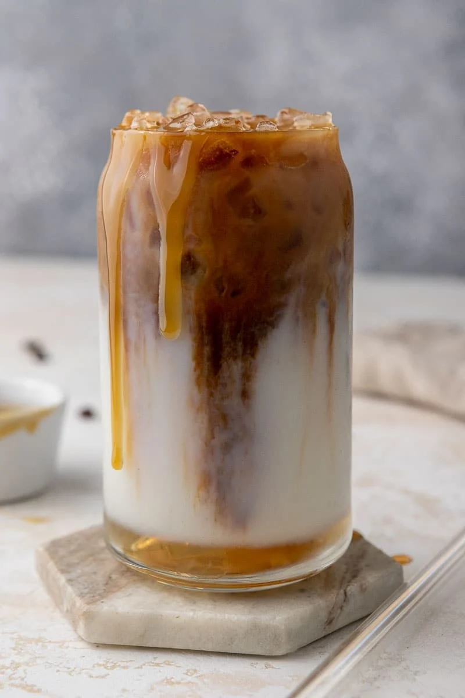

Pink Drink
Ingredients
- 1 cup strawberry açai refresher
- 1/2 cup coconut milk
- Freeze-dried strawberries
Instructions
- Fill glass with ice
- Pour in strawberry açai
- Top with coconut milk

Caramel Macchiato
Ingredients
- 2 shots espresso
- 1 cup milk
- 2 tbsp vanilla syrup
- Caramel sauce
Instructions
- Add vanilla syrup to glass
- Pour milk over ice
- Slowly add espresso

Mocha Frappuccino
Ingredients
- 1 cup strong coffee (chilled)
- 1 cup milk
- 3 tbsp chocolate syrup
- 2 cups ice
Instructions
- Blend all ingredients
- Pour into glass
- Top with whipped cream